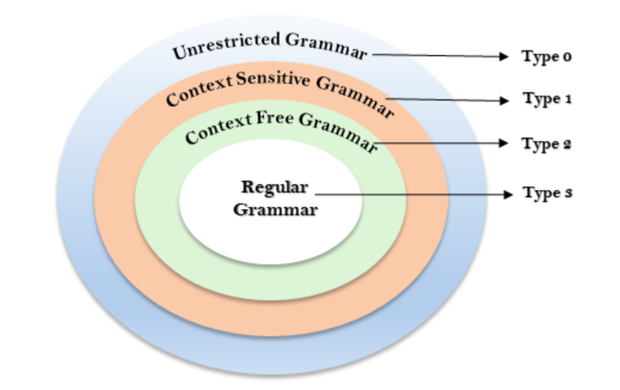

Menurut Noam Chomsky, ada empat jenis tata bahasa : Tipe 0, Tipe 1, Tipe 2, dan Tipe 3. Tabel disamping ini menunjukkan perbedaannya satu sama lain
Hierarki Chomsky mewakili kelas bahasa yang diterima oleh mesin yang berbeda. Kategori bahasa dalam Hierarki Chomsky adalah seperti yang diberikan di bawah ini :
1. Tipe 0 dikenal sebagai Unrestricted Grammar.
2. Tipe 1 dikenal sebagai Context Sensitive Grammar.
3. Tipe 2 dikenal sebagai Context Free Grammar.
4. Tipe 3 dikenal sebagai Regular Grammar.

Ini adalah hierarki. Oleh karena itu setiap bahasa tipe 3 juga tipe 2, 1 dan 0. Demikian pula, setiap bahasa tipe 2 juga tipe 1 dan tipe 0, dll.
Tipe 0 dikenal sebagai tata bahasa tak terbatas. Tidak ada batasan pada aturan tata bahasa dari jenis bahasa ini. Bahasa-bahasa ini dapat dimodelkan secara efisien oleh Turing Machine.
Contoh :
bAa → aa
S → s
Tipe 1 dikenal sebagai Tata Bahasa Peka Konteks. Tata bahasa peka konteks digunakan untuk mewakili bahasa peka konteks. Tata bahasa peka konteks mengikuti aturan berikut :
> Tata bahasa peka konteks dapat memiliki lebih dari satu simbol di sisi kiri aturan produksinya.
> Jumlah simbol di sisi kiri tidak boleh melebihi jumlah simbol di sisi kanan.
> Aturan bentuk A → ε tidak diperbolehkan kecuali A adalah simbol awal. Itu tidak terjadi di sisi kanan aturan mana pun.
> Tata bahasa Tipe 1 harus Tipe 0. Pada tipe 1, Produksi dalam bentuk V → T
Dimana jumlah simbol pada V kurang dari atau sama dengan T.
Contoh :
S → AT
T → xy
A → a
Type 2 Grammar dikenal sebagai Context Free Grammar. Bahasa bebas konteks adalah bahasa yang dapat diwakili oleh tata bahasa bebas konteks (CFG). Tipe 2 harus tipe 1. Aturan produksi dalam bentuk
A → α
Dimana A adalah non-terminal tunggal dan kombinasi terminal dan non-terminal.
Contoh :
A → aBb
A → b
B → a
Type 3 Grammar disebut Regular Grammar. Bahasa reguler adalah bahasa yang dapat dideskripsikan menggunakan ekspresi reguler. Bahasa-bahasa ini dapat dimodelkan oleh NFA atau DFA.
Tipe 3 adalah bentuk tata bahasa yang paling terbatas. Tata bahasa Tipe 3 harus Tipe 2 dan Tipe 1. Tipe 3 harus dalam bentuk
V → T * V / T *
Contoh :
A → xy
Copyright © 2020 | Irfadiana Nurhasanah